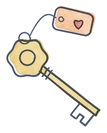
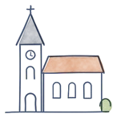
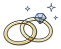
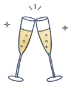
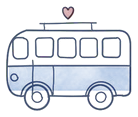
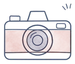
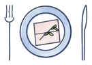
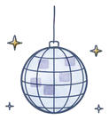

Die Feier
Wann
Samstag, 10. Juli 2027
Treffpunkt um 12.30 Uhr
Beginn der Trauung um 13.00 Uhr
Kirchliche Trauung
Pfarrkirche Ybbsitz
(Sabines Heimatort)
Dresscode
gemütlich, sommerlich, hochzeitlich
Wir freuen uns über sommerliche, gerne farbenfrohe und festliche Outfits. Kleider, Jumpsuits oder elegante Zweiteiler sind ebenso willkommen wie Anzüge – bei sommerlichen Temperaturen natürlich gerne auch in leichten Stoffen und hellen Farben. Eine Krawatte ist kein Muss.
Farblich gibt es keine Vorgaben: Tragt, was euch gefällt und worin ihr euch wohlfühlt. Wer nach Inspiration sucht, kann sich gerne an den Farben unserer Website orientieren.
Anfahrt
Hier findet ihr die Kirche in Ybbsitz und unser Landhaus auf der Karte.
Ablauf
Vom Einchecken am Vormittag bis spät in die Nacht.
-

ab 10.00 Uhr Einchecken in den Apartments in Ybbsitz -

12.30 Uhr Treffpunkt vor der Pfarrkirche Ybbsitz -

13.00 Uhr Kirchliche Trauung -

14.00 Uhr Agape am Marktplatz Ybbsitz -

15.00 Uhr Shuttle Ybbsitz – Waidhofen – Obersteinriegl -

16.00 Uhr Gruppenfotos, Kaffee & Kuchen -

ca. 19.30 Uhr Abendessen -

anschließend Party - ab 24.00 Uhr Shuttles zurück nach Ybbsitz und Waidhofen
Übernachtung
Für unsere Gäste sind Apartments in Ybbsitz reserviert. Die Buchung erfolgt direkt bei der Schmiede Ybbsitz.
Platz
2 bis 6 Personen
je nach Apartment
Kosten
ca. 50–70 €
pro Person und Nacht
Einchecken
ab 10.00 Uhr
am Hochzeitstag
Nicht alle Apartments bieten Platz für 6 Personen. Ihr könnt euch gerne untereinander absprechen und ein Apartment gemeinsam buchen.
Reservierung
Schmiede Ybbsitz · Conny Welser
Anruf oder Nachricht: 0699 12628887
Bitte erwähnt bei der Reservierung, dass ihr zur Hochzeit von Felix & Sabine kommt.
Shuttle
Unsere Abendlocation liegt auf einem Hügel, vor Ort gibt es nur wenige Parkplätze.
Wir organisieren deshalb einen Shuttle von Ybbsitz zur Abendlocation in Gaflenz – und ab Mitternacht wieder zurück. Damit wir die Fahrten planen können, gebt uns bitte im Rückmeldeformular an, ob ihr den Shuttle nutzen möchtet.
Häufige Fragen
Hier beantworten wir die wichtigsten Fragen rund um unsere Hochzeit.
Bis wann muss ich mich zurückmelden?
Bitte gebt uns bis spätestens 31. März 2027 Bescheid – am einfachsten über das Formular weiter unten.
Darf ich eine Begleitung (+1) mitbringen?
Unsere Einladung richtet sich an die Personen, die darauf persönlich angesprochen sind. Zusätzliche Begleitpersonen (+1) sind leider nicht eingeplant. Bei Fragen dazu meldet euch bitte direkt bei uns.
Sind Kinder willkommen?
Kinder sind in der Kirche und bei der Agape herzlich willkommen. Der Abend und die Party in Gaflenz sind ohne Kinder geplant.
Falls dies aufgrund von Betreuungspflichten – insbesondere bei Babys und Kleinkindern – zu Komplikationen führen würde, nehmt bitte Kontakt mit uns auf.
Wie komme ich nach Ybbsitz?
Mit dem Auto: Ybbsitz liegt im Mostviertel (Niederösterreich), von Wien aus sind es rund 150 km. Die Anreise erfolgt über die A1 (Westautobahn) und anschließend über Landstraßen. Am einfachsten gebt ihr „Pfarrkirche Ybbsitz“ in euer Navigationsgerät ein.
Mit Bahn und Bus: Eine direkte Verbindung gibt es nicht. Fahrt mit dem Zug bis Waidhofen an der Ybbs (aus Richtung Wien oder Linz meist mit Umstieg in Amstetten) und von dort mit dem Bus in gut 20 Minuten weiter nach Ybbsitz. Aktuelle Verbindungen findet ihr bei ÖBB Scotty oder VOR AnachB. Da Busse am Wochenende teilweise seltener verkehren, empfehlen wir, die Fahrzeiten frühzeitig zu prüfen.
Gerne könnt ihr euch auch zu Fahrgemeinschaften zusammenschließen.
Wie komme ich am besten von A nach B?
Wir empfehlen, bereits am Vormittag in Ybbsitz anzukommen und das Auto dort zu parken – in Ybbsitz stehen ausreichend Parkplätze zur Verfügung. Das Einchecken in den Apartments ist ab 10.00 Uhr möglich.
Ab dann könnt ihr das Auto stehen lassen: Kirche und Agape finden in Ybbsitz statt, um 15.00 Uhr bringt euch der Shuttle zur Location nach Gaflenz, und ab Mitternacht fährt er euch wieder zurück.
Kann ich direkt mit dem Auto zur Location nach Gaflenz fahren?
Bei der Location in Gaflenz sind Parkplätze nur begrenzt vorhanden. Wir empfehlen daher, den Shuttle zu nutzen. Falls ihr direkt mit dem Auto nach Gaflenz fahren möchtet, nehmt bitte vorher Kontakt mit uns auf.
Gibt es etwas zu essen?
Bei der Agape und später in Gaflenz (Kaffee & Kuchen ab 16.00 Uhr) gibt es Snacks. Das Abendessen findet gegen 19.30 Uhr statt.
Da zwischen dem Frühstück und der Agape einige Stunden liegen, empfehlen wir ein leichtes Mittagessen vor der Kirche oder ein ausgiebiges, spätes Frühstück.
Darf ich selbst fotografieren?
Ja, selbstverständlich – ihr dürft gerne selbst fotografieren und filmen. Ein professionelles Foto- und Videoteam begleitet uns bis zum Abendessen, ihr müsst also nichts festhalten, dürft es aber natürlich gerne tun.
Wir möchten ein Spiel oder eine Show für den Abend vorbereiten – geht das?
Wir freuen uns über eure Ideen! Bitte stimmt sie vorab mit unseren Trauzeuginnen und Trauzeugen ab. Sie koordinieren das Programm am Abend, ihre Kontaktdaten findet ihr auf der Einladung.
Damit der Abend entspannt und reibungslos verläuft, bitten wir darum, Spiele oder Shows nicht ohne vorherige Absprache zu starten.
Was wünscht ihr euch als Geschenk?
Euer Kommen ist unser größtes Geschenk. Wenn ihr uns darüber hinaus etwas schenken möchtet, freuen wir uns über einen finanziellen Beitrag zu unserer Hochzeitsreise.
Rückmeldung
Bitte gebt uns bis zum 31.03.2027 Bescheid, ob ihr dabei seid! Wir freuen uns riesig, mit euch zu feiern.